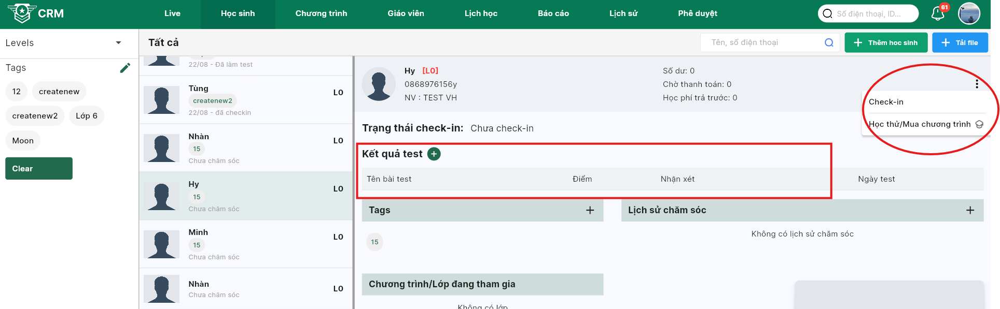

Lưu ý
- Học sinh của sale nào, chỉ sale đó thao tác được những vấn đề liên quan checkin, nhập kết quả test, đăng ký học, lịch sử chăm sóc.
- Ngoài sale trực tiếp học sinh ra, giám đốc trung tâm có thể xem được các học sinh thuộc sale đó, nhưng không thao tác được.
- Việc nạp tiền vào tài khoản, việc hoàn tiền, việc bảo lưu hay đăng ký chương trình tất cả đều được Giám đốc trung tâm phê duyệt. Sau khi giám đốc trung tâm phê duyệt hệ thống mới ghi nhận hành động đó.
- Các thao tác trên 1 học sinh từ việc nạp tiền, đăng ký, thanh toán, thay đổi nv phụ trách .. đều được ghi lại ở phần 'Lịch sử' trong màn thông tin học sinh.
- Nghỉ học có phép → Không tính học phí cho buổi đó.
⚠️ Lưu ý: Chỉ được xử lý tích nghỉ phép trong đúng ngày có buổi học. - Nghỉ học không phép → Dù có điểm danh hay không, vẫn bị tính học phí cho buổi đó.
👉 Hệ thống mặc định tính phí (dù đi học hay không).
➡️ Nếu muốn không tính phí, phải tích “nghỉ phép” trong ngày hôm đó.
CHÚ Ý VỀ VIỆC ĐIỂM DANH, TÍNH HỌC PHÍ
🔑 Đăng nhập
- Truy cập crm.armyenglish.edu.vn.
- Nhập Tên đăng nhập và Mật khẩu được cấp → bấm Đăng nhập.
- Bấm avatar góc phải → Chỉnh sửa thông tin cá nhân → cập nhật Email, Địa chỉ, Giới tính, Ảnh đại diện → Cập nhật.
Giải thích các thông số trên màn live (đang cập nhập)
-
Doanh thu
Ý nghĩa: Tổng số học phí đã thu từ học sinh.
Cách tính: Lũy kế theo tháng, đến thời điểm truy cập.
-
Học sinh Active
Ý nghĩa: Số lượng học sinh đang hoạt động tại trung tâm.
Cách tính: Học sinh cũ + học sinh mới đã active, lũy kế theo tháng đến thời điểm truy cập.
-
HS điểm danh hôm nay
Ý nghĩa: Số học sinh đi học trong ngày.
Cách tính: Tổng số học sinh đã được điểm danh hôm nay.
-
Học sinh Check-in
Ý nghĩa: Tổng số học sinh có check-in trong tháng.
Cách tính: Lũy kế theo tháng, đến thời điểm truy cập.
-
Học sinh trial
Ý nghĩa: Tổng số học sinh học thử trong tháng.
Cách tính: Lũy kế theo tháng, đến thời điểm truy cập.
-
Học sinh mới
Ý nghĩa: Số học sinh mới đăng ký.
Cách tính: Lũy kế theo tháng, đến thời điểm truy cập.
-
Tổng số lớp hôm nay
Ý nghĩa: Các buổi học diễn ra tại trung tâm trong ngày.
Cách tính: Đếm số lớp có buổi học hôm nay.
-
Số học sinh hết phí tháng n
Ý nghĩa: Học sinh có < 8 buổi trong tháng hiện tại.
Cách tính: Tính từ ngày 1 đến ngày 31 của tháng n (n là tháng hiện tại).
-
Số học sinh hết phí tháng n + 1
Ý nghĩa: Học sinh có < 8 buổi trong tháng tiếp theo.
Cách tính: Tính từ ngày 1 đến ngày 31 của tháng n+1, không cộng dồn giữa các tháng.
-
Số học sinh hết phí tháng n + 2
Ý nghĩa: Học sinh có < 8 buổi trong tháng sau tháng kế tiếp.
Cách tính: Tính từ ngày 1 đến ngày 31 của tháng n+2, không cộng dồn giữa các tháng.
-
Lưu ý về “n”
n là tháng hiện tại khi truy cập màn Live.

👥 Thay đổi nhân viên phụ trách học sinh
- Vào menu Học sinh → tìm và click vào học sinh cần đổi nhân viên phụ trách.
- Tại khung thông tin bên phải, bấm menu ⋮ (ba chấm).
- Chọn Thay đổi nhân viên.
- Chọn nhân viên mới → Xác nhận.
- Chỉ Giám đốc trung tâm có quyền thực hiện. Sau khi đổi, quyền thao tác (check-in, test, đăng ký…) sẽ thuộc về nhân viên mới; lịch sử chăm sóc vẫn được giữ nguyên.

📚 Tổng quan về trung tâm
🏫 1. Cài đặt trung tâm
- Avatar góc phải → Cài đặt trung tâm.
- Phòng học: Phòng học → nút + → nhập Tên phòng*, Số chỗ*, tích Active* → Tạo. Có thể sửa/xóa phòng sau khi tạo.
- Phòng ban & Nhân sự:
Phòng ban → thêm phòng ban; tại phòng ban dùng nút + để thêm SĐT → tạo tài khoản → gán vào phòng ban và chức vụ.
SĐT là định danh nhanh; cần duy nhất.
Trong mục này có thể đánh dấu nhân viên là Sales (gán quyền Sales). - Voucher: Xem các voucher đang dùng.

- Xem danh sách toàn bộ Sales đã được gán.
- Có thể gỡ bỏ quyền Sales khi nhân viên không còn phụ trách.

Hình minh họa: thêm trường học vào trung tâm
👩🏫 2. Thêm giáo viên
- Vào Giáo viên → Thêm.
- Nhập SĐT → thêm giáo viên vào.
- Gán giáo viên vào Trung tâm và phòng ban phù hợp.
- Phân công dạy lớp tại tab Lớp phụ trách (sau khi lớp được tạo).
- SĐT là định danh nhanh. Có thể nhập chứng chỉ/bằng cấp để phục vụ phân lớp.
📚 3. Tạo lớp
- Ở mỗi chương trình sẽ có phần tạo Category cho từng chương trình, sau khi tạo category thì ấn vào mục lớp học và tạo lớp.
- Điền thông tin lớp học:
– Tên lớp*, Chương trình*, Ngày bắt đầu dự kiến*, Ngày kết thúc dự kiến*.
– Giáo viên*, Học sinh tối đa, Nhân viên hỗ trợ lớp (nếu có).
– Avatar (tùy chọn).
– Bật Kích hoạt*.
– Chọn Danh mục*. - Bấm Tạo lớp học để hoàn tất.

🗓️ 4. Cài lịch học
- Tại tab Lịch học, bấm nút Tạo lịch học (góc phải) để mở hộp thoại.
- Trong hộp thoại: chọn Phòng học*, Buổi học* (thứ), Bắt đầu* và Kết thúc*.
- Muốn thêm 1 buổi/khung giờ nữa, bấm icon +.
- Bấm Cập nhật/Lưu → hệ thống tự động tạo lịch theo cấu hình.
- Hệ thống sẽ cảnh báo nếu trùng phòng/giáo viên.
- Sửa lịch học: ở mỗi dòng buổi học, bấm menu ⋮ (ba chấm) → chọn hành động (VD: Chỉnh sửa, Hủy lịch…).
🔔 Lưu ý: tạo buổi cũ & đặt lại tên
- Có thể tạo các buổi cũ để số buổi hiện tại = số buổi thực tế.
- Quy định: buổi được tạo thêm phải có thời gian diễn ra trước thời gian buổi đầu tiên của lớp.
- Click vào dấu + để thêm buổi học. Sau khi thêm buổi xong: vào tab Chưa bắt đầu → ở dòng buổi vừa tạo bấm menu ⋮ → chọn Đặt lại tên để cập nhật tên buổi theo thứ tự mong muốn.
Hình minh họa: Đặt lại tên buổi học
SALES
➕ 1. Thêm học sinh vào trung tâm
Mỗi học sinh được gắn với Sale tạo ra. Sale đó thao tác các mục (check-in, làm test, lịch sử chăm sóc…). Quản lý trung tâm/team có thể xem nhưng không thao tác; các Sale khác không xem được.
1.1. Level
- Bên trái có danh sách Levels (L0 → L5) để chăm sóc theo 5 giai đoạn; có thể kết hợp lọc theo tag.
- Level cập nhật tiến từ L0 → L5 (không cập nhật lùi); có thể ghi nhiều lần chăm sóc trong cùng 1 level.
1.2. Tag
- Khu vực Tags dùng để gắn nhãn HS theo nhóm/chiến dịch/Sale.
- Mỗi Sale có thể tự tạo tag; tag do Sale nào tạo chỉ Sale đó thấy.
- Bấm icon bút để chọn/đổi tag; bấm Clear để bỏ lọc.
1.3. Thêm học sinh
- Bấm Thêm học sinh (góc phải) để thêm thủ công.
- Nhập SĐT (định danh) , lưu ý điền thêm ký tự A vào đuổi SĐT để phân biệt với sđt phụ huynh, nếu PH có nhiều con thì điển lần lượt A,B,C.
- Điền thông tin (Tên, SĐT,...) rồi Tạo tài khoản.
- Sau khi tạo,thêm học sinh vào trung tâm, chọn nhân viên sale phụ trách và nguồn.
📤 2. Upload danh sách
Tải file mẫu tại đây: Mẫu upload học sinh (Google Sheets).
- Mở file mẫu và điền dữ liệu theo cột. Các cột bắt buộc: Họ và tên, Ngày sinh, SĐT tạo tài khoản. Lưu ý: thêm 1 kí tự vào sau SĐT của phụ huynh để phân biệt (ví dụ: SĐT + A, SĐT + B…). Các cột còn lại có thể để trống.
-
Lưu ý định dạng:
Tất cả cột trong file mẫu đang đặt là Text/Plain text
(để không mất số 0 đầu số điện thoại, không tự đổi ngày-tháng).
Không đổi sang Number/Date và không đổi định dạng file.
Nên tải xuống/lưu dưới dạng
.xlsx. - Trên CRM → vào tab Học sinh → bấm nút + Tải file (góc phải).
-
Trong hộp thoại:
– Chọn nhân viên (Sale): chọn đúng tên của bạn.
– (Tuỳ chọn) thêm Tags và chọn nguồn.
– Chọn file để tải lên → chọn file.xlsxtheo mẫu.
– Bấm Tải lên. - Sau khi tải, hệ thống kiểm tra dữ liệu. Nếu có lỗi, xem thông báo để sửa trong file rồi tải lại.
📈 3. Level & Lịch sử chăm sóc
- Trong hồ sơ học sinh → khối Lịch sử chăm sóc → bấm biểu tượng ghi chú.
- Hộp thoại Thêm mới ghi chú chăm sóc:
– Chọn Level (L0 → L5) tương ứng giai đoạn chăm sóc.
– Gõ nội dung ghi chú ở ô bên dưới → bấm Lưu. - Mỗi Level là một giai đoạn chăm sóc; một Level có thể ghi chú nhiều lần.
📝 4. Đăng ký học thử / Đăng ký chương trình
-
1) Điều kiện & chuẩn bị
- Check-in học sinh: tại hồ sơ học sinh (khung bên phải) bấm menu ⋮ → chọn Check-in.
- Nhập kết quả test: ở khối Kết quả test bấm nút + → điền Tên bài test, Điểm, Nhận xét → Lưu.
-
2) Thao tác đăng ký
- Tại hồ sơ học sinh, bấm menu ⋮ → chọn Học thử / Mua chương trình.
- Chọn chương trình muốn đăng ký.
 -
3) TH1 — Đăng ký học thử
- Tích chọn ô Học thử.
- Nhập số buổi học thử (*).
- Bấm Thêm học sinh vào chương trình để lưu.
-
4) TH2 — Đăng ký chương trình
- Chọn Gói phí (*).
- (Tuỳ chọn) Chọn Voucher và nhập nội dung (nếu có).
- (Tuỳ chọn) Nhập Giảm trừ khác (nếu có). Giảm trừ dùng khi số tiền thực thu khác với giá gói. Ví dụ: gói 12.000.000đ nhưng thực thu 11.000.000đ → nhập 1.000.000.
- Kiểm tra lại số tiền thực tế phải nộp.
- Bấm Thêm học sinh vào chương trình để hoàn tất.
💳 5. Nạp tiền / Thanh toán / Hoàn tiền
Nạp tiền
- Mở tab Học sinh → click vào dòng học sinh để vào hồ sơ chi tiết.
- Tại khung thông tin tổng quan, bấm nút + (ô số dư) để mở hộp thoại nạp tiền.
- Nhập Số tiền (*) và Nội dung (*) (ghi rõ lý do).
- Bấm Nộp. Phiếu nạp sẽ ở trạng thái chờ phê duyệt.
- Vào menu Phê duyệt → thẻ Đề nghị của tôi để theo dõi.
- Sau khi được phê duyệt, hệ thống sẽ cộng tiền vào tài khoản học sinh. Nếu bị từ chối, xem lý do ở màn Phê duyệt.
Thanh toán học phí từ số dư
- Khi tài khoản học sinh đã có số dư, mở hồ sơ học sinh.
- Vào tab Thanh toán để thực hiện.
- Theo dõi phê duyệt tại menu Phê duyệt → Đề nghị của tôi.
Hoàn tiền cho học sinh
- Mở hồ sơ học sinh, tại menu ⋮ chọn Hoàn tiền.
- Nhập số tiền và lý do hoàn tiền; phiếu hoàn sẽ ở trạng thái phê duyệt.
- Theo dõi tiến trình tại Phê duyệt → Đề nghị của tôi.
CM
🔁 1. Xếp/xóa HS khỏi lớp/chương trình & Bảo lưu
- Mở menu Chương trình → khung trái hiển thị danh sách chương trình của trung tâm → chọn chương trình cần thao tác.
- Tại tab Học sinh, dùng các bộ lọc trạng thái (Tất cả, Chờ thanh toán, Chờ xếp lớp, [HT] Đang học, Hết hạn, Bảo lưu…) để lọc danh sách.
1.1. Xếp lớp
- Học sinh phải ở trạng thái Chờ xếp lớp và đã thanh toán gói phí.
- Tại dòng học sinh → bấm menu ⋮ → chọn Xếp lớp.
- Chọn Lớp phù hợp → bấm Thêm vào lớp.
1.2. Xóa khỏi lớp / Xóa khỏi chương trình
- Xóa khỏi lớp: vào màn Lớp → tại danh sách học sinh của lớp bấm ⋮ → Xóa học sinh khỏi lớp.
- Xóa khỏi chương trình: quay lại tab Học sinh của chương trình → bấm ⋮ ở dòng học sinh → Xóa học sinh khỏi chương trình.
1.3. Bảo lưu
- Tại tab Học sinh của chương trình → bấm ⋮ → Bảo lưu
- Bảo lưu cần phê duyệt. Vào menu Phê duyệt để kiểm tra yêu cầu đã gửi và trạng thái duyệt.
✏️ 2. Chỉnh sửa lớp học
- Mở menu Chương trình → Lớp → chọn lớp.
- Bấm ⋮ → Chỉnh sửa.
- Có thể chỉnh: Giáo viên, Nhân viên hỗ trợ lớp, Ngày bắt đầu, Ngày kết thúc, … → Cập nhật.
📆 3. Cài lịch học
- Tại tab Lịch học, bấm nút Sửa lịch học (góc phải) để mở hộp thoại.
- Trong hộp thoại: sửa Phòng học*, Buổi học* (thứ), Bắt đầu* và Kết thúc*.
- Muốn thêm 1 buổi/khung giờ nữa, bấm icon +.
- Bấm Cập nhật/Lưu → hệ thống tự động tạo lịch theo cấu hình.
- Hệ thống sẽ cảnh báo nếu trùng phòng/giáo viên.
- Sửa từng buổi lịch học: ở mỗi dòng buổi học, bấm menu ⋮ (ba chấm) → chọn hành động (VD: Chỉnh sửa, Hủy lịch…).
4. Nhập điểm, nhận xét
- Chỉ nhân viên phụ trách lớp mới thao tác được nhập điểm và nhận xét.
- Có thể nhận xét các buổi học đang diễn ra hoặc đã diễn ra , không nhận xét được buổi chưa diễn ra.
Nhập điểm, nhận xét theo file
- Mở lớp → click vào Buổi học cần nhập điểm/nhận xét.
- Nhấn biểu tượng 3 chấm ở góc phải cửa sổ chi tiết buổi học. Chọn Xuất danh sách học sinh để tải file mẫu về máy.
- Mở file → điền các thông tin như trong file bắt đầu từ dòng số 5 theo từng học sinh (đúng định dạng cột trong file).
- Quay lại màn hình buổi học → nhấn 3 chấm → chọn Tải lên danh sách đánh giá.
- Chọn file vừa nhập → xác nhận Tải lên → kiểm tra kết quả hiển thị trong danh sách học sinh.
Nhập điểm, nhận xét thủ công cho từng học sinh
- Tại danh sách học sinh của buổi học, tìm đến học sinh cần nhập.
- Nhấn nút 3 chấm ở góc phải dòng tên học sinh. Chọn Đánh giá bài tập về nhà.
- Nhập thông tin đánh giá (điểm, nhận xét, …) → nhấn Lưu.

- Để xem lại thông tin điểm, nhận xét, xuất file danh sách học sinh về để xem
- Hoặc có thể xem ngay tại chi tiết buổi học hoặc chi tiết thôn gtin của học sinh đó.
🔁 5. Điểm danh
- Chỉ được điểm danh cho các buổi học đang diễn ra hoặc đã diễn ra,
không thể điểm danh cho các buổi học chưa diễn ra.
- Cách thực hiện điểm danh:
- Vào Lớp học → Lịch học.
- Chọn buổi học cần điểm danh.
- Tích vào ô vuông để điểm danh từng học sinh. Nếu muốn chọn tất cả, tích vào ô “Chọn tất cả”.
- Ấn nút Check-in để lưu điểm danh.